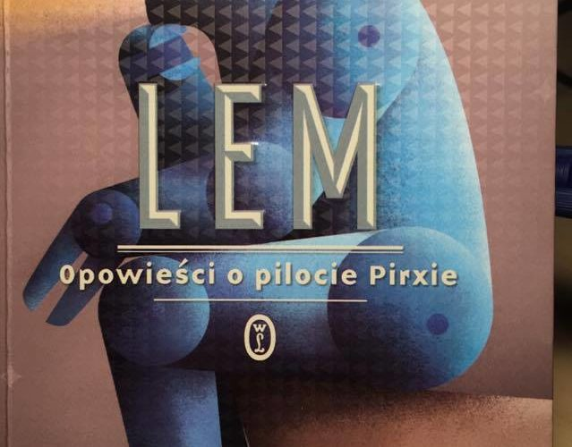

To moja druga książka Stanisława Lema i, jestem zafascynowany!
Opowieści o pilocie Pirxie to zbór opowiadań, które łączy jedynie to, że
ich głównym bohaterem jest Pirx. Człowiek, który ma szczęście do
najrozmaitszych przygód. Każda z nich potrafi trzymać czytelnika w
napięciu choć nie brakuje w niej filozoficznych rozważań oraz
fundamentalnych pytań o to czym jest świadomość, inteligencja,
człowieczeństwo. Po niektórych rozdziałach musiałem robić sobie dłuższe
przerwy na rozmyślenia, ponieważ nie czułem się jeszcze gotowy na nowe
wrażenia. Bardzo podobały mi się przemyślenia na temat starzenia się, z
ostatniego rozdziału - Ananke.
Zanim skończyłem czytać fizyczną książkę, kupiłem ją w wersji audiobooka.
Bardzo polecam przeczytanie tej książki wszystkim wielbicielom
science-fiction.
Książka 10/10. Na pewno będę do niej jeszcze nieraz wracać.
(Audiobook
oceniłem 5/5)
